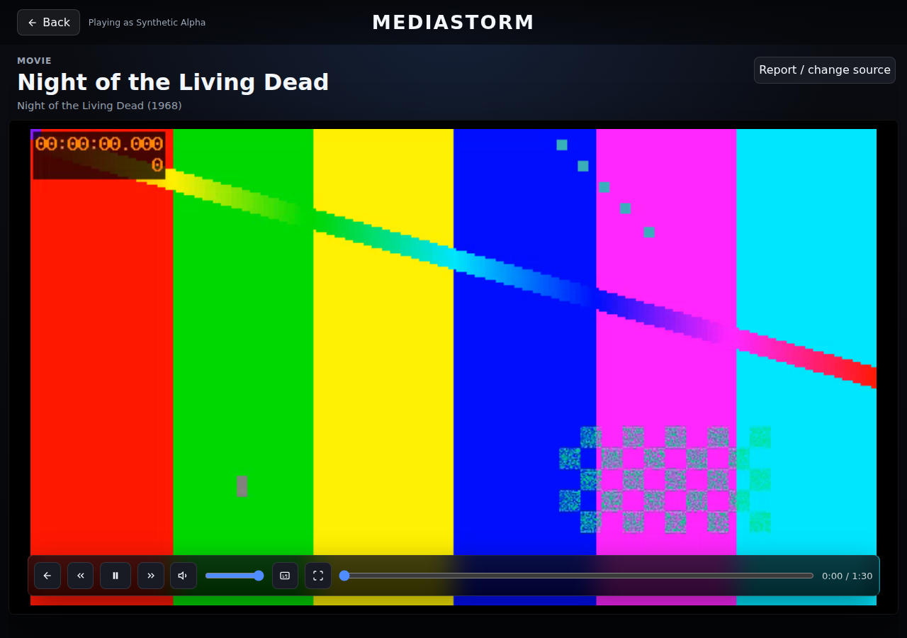

ACTUAL WEB CLIENT / GENERATED VIDEO / ISOLATED DATABASEFamily application acceptance
These screenshots come from the complete application with synthetic accounts and a generated H.264/AAC test pattern. The catalogue film name is a metadata label. This is an evidence viewer; the test application itself stays on loopback.

Decoded video from the actual web player. No original film or private media is included.Checked: account sign-in, profile selection, PIN, a real movie card, decoded video frames, cancel without source change, pause, seek, resume, persisted progress and profile isolation.
Acceptance limits- Known demo detail-metadata and Netflix chart failures are recorded. Other server errors and page exceptions fail the browser suite.
- A single click-to-frame sample on generated media is not a provider performance p95.
- Native Compose rendering, physical TV/phone controls and real providers require separate acceptance.
- No production deployment, device installation, private playlist or existing user media is included.